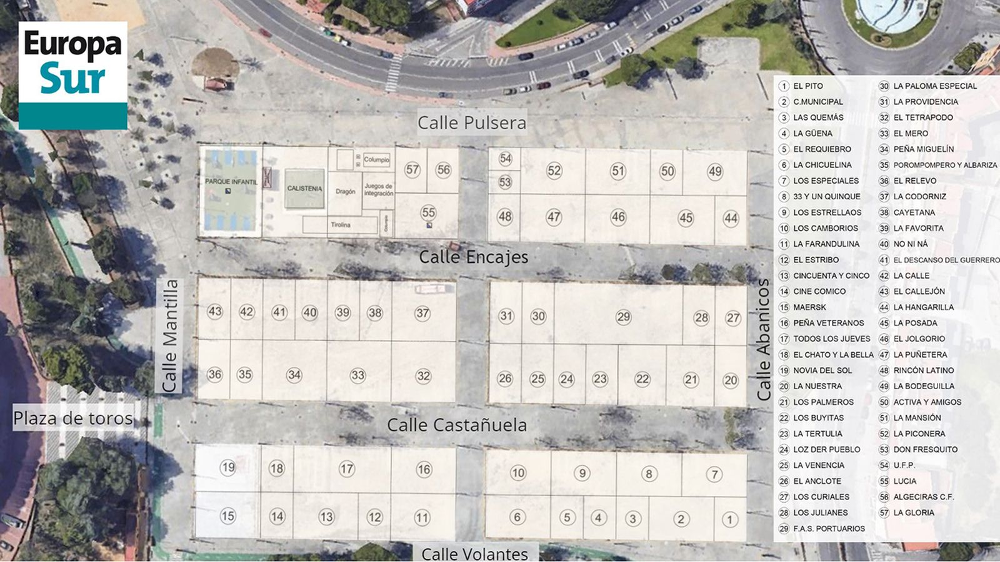

Saltar al contenido principal
Buscar
Buscar
Feria Real de Algeciras 2026

Mapa de casetas de la Feria Real
Mapa interactivo donde cada zona resaltada representa una caseta del recinto ferial. Pulse o haga clic sobre cada caseta para ver su información.